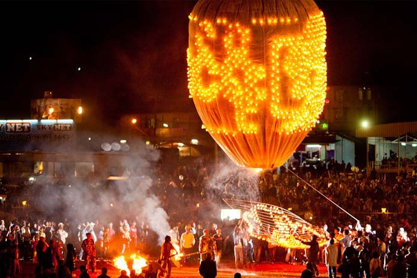

Tanh saun moun ( Ta-zaung-mone ) : November
Written by Khin Myo Chit and Junior Win ( Flowers & Festivals )
8.Tanhsaunmoun(Tazaunmone)
Yellow robes for kathina offering,
the reward of the Path is the aim.
At this time,scattering the pollins,
the luffa at the end of its gold stem
is rich in fra grance.
Amid the sky
in heavens above
the golden moom Canda
and the brilliant star Pleiades
shine memily.
Tanhsaunmoun(Tazaungmone)
After four months of rain comes a sucession of festive months starting with Thadingyut lights festival.Come Tazaungmone,still another lights festival even more elaborate with the usual trimmings of music,dances and shows.It is rather convenient,so stay fun-loving Myanmar,that the paper lanterns and decorations are still in fairly good condition to be put up again in three week's time.
Tazaungmone festaval as the lights festival in the month of Tazaungmone is called is more or lessa folk festival,probably pre-Buddhist,so originally without any Buddhist significance.The festival is mentioned in stories before the Buddha'stime as kattika festival,in honour of the guardian gods of the planets.It is said that certain planetary sings of the zodiac are in the ascendant during the month.The influence of the planets in ascendence if such that people'sthoughts are bent on mischief.It is during the month that thieves are moved to ply their trade.
Kings of the olden days decreed that feasts were to be held and all kings of jollity and merry-making were licensed,so that people's thoughts might be chanelled away from serious mischeif,akind of psychological warfare.There are stories of how men nomally sober and steadfast were so moved by the spirit of the season that they did unseemly things. Perhaps the pleasant weather with cloudless starry akies and silvery moonbeams may have something to do with it.
Though Tazaungdine light festival began in the times immemorial as a folk ritual,it is regarded today as an essentially.Buddhist festival.The month is the time for offering robes to the monks.
Of course, there is no restriction whatsoever when robes should be offered to the monks.Anyone can make the offering any time to any monk;but this month's offering has a special significance.This is a special time,the time, when,after long months of seclusion in the monasteries,monks make preparations to go on trips to see and pay respects totheir teacher and parents,now that the ban on teavel(only for monks)has been lifted.
At such a time,many monks are in need of new robes.Offering of robes and other gifts,in this season are made not to any individual monk,but to the Order as whole so that the needy ones shall get the robe.Offering of gifts to monks, if it is to bear highest frution,must be made to the Order as a whole and not to an individual monk.Donors being human are often moved to offer gifts to monks by personal feelings,like partiality or attachment.Although such other acts are,in their own way,mwritorious deeds,the fruition is not as great as the act of giving to the Order of monks or the sangha.
Once,during the lifetime of the Buddha,his forster mother.Gotami made a robe for the buddha.It was made of finest material and marvellously ela borate.When she offered it to the Buddha,he suggested that it should be offered to the Order as a whole.It was then that he explained the desirability of such an attitude in making the act of offering.
The Buddha in his infinite wisdom saw that in the far future,whenhewas no more,his techingsn would not last,unless the Order of monks carried on with their study and contemplation.The Order must be supported by the laity.If lay people offered gifts to the monk to worm they were partial, there would be many others whi would in need.Such asituation would undermine the strength of the Order.
Offering of special robes and other gifts made to the Order of monks during the season keeps alive the true spirit of offering as taught by the Buddha.All the gifts are offered to the Order sothat the need of the poorest monks are suitably supplied.According to the rule agooup of monks who have spent the lent under asenior monk in amonastery is eligible as an instiution to accept the gifts called the kathina gifts.
It is the custom of the community to organize the offering of gifts,everyone contributing in cush or in kind.Member of the same profession or trade or people working in the same office form such groups for this purpose and collect gifts for the monastery.
Therefore,during this season,you will see wooden traingular structures stading in market places or in decorated marquees by the wayside.Each structure is hung with gifts,like sets of yellow robes,twoels,napkins,cups and such useful thing big andsmall. They are kathina gifts and anyone is welcome to hang whatever he wishes to contribute,a kyat note,or a handkerchief or a cake of soap-no matter however small.
Those structures hung with gifts are called padentha tree. The woed padetha is synonmous with plenty and inexhausitble wealth.The story of padetha tree dates back to the beginning of the world whenhumans were pure of heart. They had a padetha tree which bore everything that humans could wish for.....food,clothes and things.If one felt like eating a special food,one just went and plucked it from the tree.If one wished to wear an exotic dress,it was right there for the taking.
The only thing is that one must take only what one could use for the day and no more.Humans,however,were weak;they wanted to have things abundanly in their possesion;they did not trus others,who might take more than they needed.One person troubled by such thoughts,began taking more than he needed and the next person followed suit.People began stoking things and there rose quarrels and fights and the tree was destroyed.Form them on,men had tolive by the sweat of his brow.
The original padetha tree was no more,but right there durings the Tazaungdine season,it grows again.Everything grows on the tree.Humans,once again,are generous and loving.They make the trees bear all kinds of gifts big and small.
The grand moment is when the gift-laden padetha trees are taken in triumph to the monastery,attended by music and dance troupes and bevies of damsed in bright silks.
Kathein offering isconsidefed one of the most meritorious deeds.Thereare stories of how acts of giving bear fruit and padetha treefeature in such stories.Go to any pagoda and when you put acoin into the donation box the mansitting with the triangular brass gong accepts the gift and intones a prayar for you and amongst the things he wishes for you,he includes;"May you have a padetha tree right on your doorstep".
It is a beautiful idea, to have a padetha tree on your doorstep.Perhaps you can grow it by hanging a small gift on those padetha trees or the kathein offerings. The highlight of kathein offering is the weaving of non-stale robes so called because the robes are not allowed to go stale,that is to say,they are moven within the space of the night.This ,of course,is opitional,not neccessarily an item in the religious programme.It is perhaps a folk tradition to encourage the art of weaving.This ritual glorifies the common labour of the rural folk.
Even today this weaving of the robes is organized in rural and urban areas.Music,dance and prizes for the best weaver who can finish earliest and best add colour and enjoyment to the festival.The weaving starts at sunset and finishes at down when the finished robes are pffered to the Buddha.
Inrural areas the weaving contest is even more elaborate.Picking of cotton and spinning are also included,and they aer done withing the space of the night.Cotton fields are reserved for the event.Village tracts organze the contests,organzing leams for picking cotton,spinning,dyeing and weaving.
Moonlight,musicand dances lighten the labour.Young men with drums,flutes and cymbals entertain the girls throughout their chores of picking cotton,spinning weaving and dyeing.The best teams and the best weave are awarded prizes.
The tradition of weaving the non-stale robes is still carried on at some of the pagpda in Yangon.Under the glare of neon lights,moonlight hardly has a chance to work its magic. This seasonis a festive one in the truest sence of the word.Illuminations,show,music,allthis and
padetha
tree too.On Such a Night as this
There are lots of interesting things that happened during the Tazaungdine season.Some of the events are tragic,some comic but all of them full of human feeling. On such a night as this the full moon of Tazaungmone the city of Rajagaha was illuminated like the city of the gods and sound of music and rejocings filled the air while the whole city gave itself up to the joy of the moment King Ajatasattulay on the royal couch tortured by remorse.The king who had killed his own father could not find solace in his power or glory.
When his ministers and courtiers gathered at his feet to pay him respects,he could only remember his royal father sogood,so virtuous and so well-beloved.Ajatasattu had done the foul deed at the advice of Devadatta,the Buddha'sarch enemy,who plotted against the Buddha's life "You kill your father and be king;and I will kill the Buddha and be the Buddha in his place....".Devadatta had said .Devaddatta's misdeed was such that the earth who had borne everything on its back,would not suffer to have such a miscerant.The earth gaped open with hell's fire and swallowed Devadatta.
Ajatasattu heard the news and was filled with fear that a similar fate might overtake him1Moreover he understood too late how a father could love his son,because a son and been born to him.It was a moment of truth for the patricide king and he knew that he must go to the Buddha for refuge.But how could he a patricide?
Among his minister was Jevaka,his half-brother,physican to the Buddha and his disciple.Perhaps he could ask Jevaka to take him to the Buddha.But aking could not make a such a request in the presence of his couritiers. So the king began the conversation praising the beauty of the night."How fair sirs,is the cloudless night!How charming! Howloverly! What sage or brahman shall we seek out to see if he may give out hearts peace?"
The ministers,each in turn, recommended the sages they themselve followed.The king listened in silence,waiting for Jevaka to speak.Jevaka suspected that the king wanted him to speak, but he would rather want to make sure.
Finally the king asked Jevaka why he had not spoken.Only then did Jevaka rise up from his seat and with his hands clasped in adoration towards the Buddha,said:"Sire,yonder in my mango groved wells the all-Enlightened Buddha with his disciples; unto Him,the Blessed One, let the king repair,to hear the Truth and put question."
The king immediately ordered the royal elephants to get ready and he want in royal state to Jevaka'smango grove.As he approached the grove his heart was filled with awe because all was so quiet that not a sound was heard but the stirring of the gentle breeze.Why all this uncanny silence and quiet?Was Jevaka,his own half-brother,up to some kind ftreachery? His fear wereput to rest when he saw the Buddha himself surrounded by his disciples.How could such a great number of monks be so quiet !If only his little son could be so only for a moment.Ajatasattu tought his heart greatly moved.
All was tranquil like an ocean in repose.Look ehere he would,he saw endless ranks of disciples.Then saluting the Buddha,the king asked "what is the fruit of religious life?" And the Buddha answered the king's question in a discourse called the Samaphata Sutta.Glad at heart,the king made a solemn obeisance and departed.
The Maid Whose Beauty Drove a King Mad
One of the stories associated with the Tazangdine festival is the story of a beautiful maid named Ummadanti.She was born of a rich noble family.Her father thought that she was worthy to be a queeen.So he sent word to the king who became interested.Before any girl could be selected to be queen,the king's wise brahmans had togo and see her.They must read the lineaments of the body and decide if she was fit to be a queen. Whenthe brahmans were treated to a banquet at Ummadanti'shouse,they were so intoxicated with the lady's beauty that they madea mess of every thing at the table.Ummadanti was indignant that the king should send boors on such an important mission.She ordered her servants to throw the brahmans out of the house.
Now the brahmas could not very well report the matter to the king since they had made perfect fools of themselves.So they sent in a report to the effect that the lady Ummadanti was not worthy of being a queen. Rejected by the king.Ummaadantiwasgiven in marriage to the king's general,a man of great courage and integrity.Ummadanti,withall her love and respect for her husband ,could not get over the slight the king had given her. With the rage of a woman scorned she bided her time for vengeance. Then came the full moon day of Tazaungmone and the city blossomed forth in light and festivies.The king was to ride the streets in full grandeur.It was abusy time for the general Ummadani's hasband,who had to take charge of all security matters.
The general,before he left home to go on duty,said to his beautiful wife;"My dear, the king will ride in state through the city streets and he'll surely come to our door.Please do not show yourself, lest your beauty should do